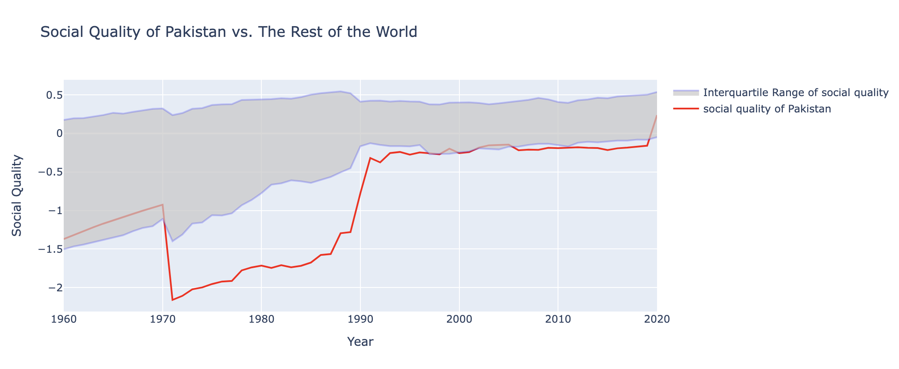
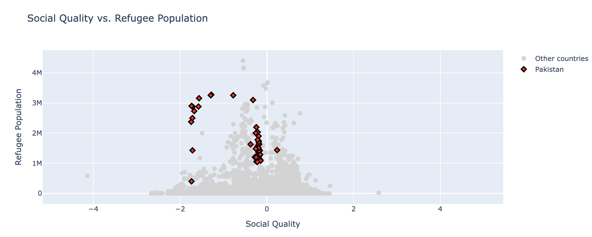

Proposition: Refugees Bring Mess to the Country Hosting Them
FOR the Proposition

Design Decisions and Rationale:
- Choosing Data (Score: 2): After doing exploratory data analysis to the data set social_development.csv, I observed that on average, Pakistan hosted the most refugee population in its country accross the world, so I decied to compare its social quality with the rest of the world to see if refugee population has an effect on it. This design helped me to maked and focus on a single country and the readers can easily points out the differences between it and all the others, which make my graph more persuasive. When choosing the country, I didn't consider any other alternatives because Pakistan is the country hosting the most refugees, no other countries can be a better representation than Pakistan.
- Data Transformation (Score: -1): Since there's no values in the data set that directly measures how bad or good a country is, I create a new matric called "Social Quality" which is calculated by taking the mean values of columns in this document after standardizing them. I also change the sign of the values to positive or negative so they can correctly represent the country's situation. Here's the meaning of Social Quality: A more positive Social Quality value implies a better society while a more negative Social Quality value implies a worse society. This design help me to more clearly show the shorts of society in Pakistan because it does not consider that the refugee population is not 100% independent from other columns, so a country with more refugee would tend to have a lower social quality score by definition. And it can emphasize that Pakistan has a worse society than others. The down side of this design is that anyone with a decent statistical background can points out the bias of this matric. I did also consider using poulation with HIV as a matric of measurement, but I didn't because this matric does not do a good job in supporting my proposition, so I decided to create my own matric that works.
- Graph Design (Score: 2): I created a line plot that compare the society quality value of Pakistan to the 25th percentile and 75th percentile society quality value in different years. This design worked well on showing that Pakistan, being the country hosting the most refugees, is usually the bottom 25% in social quality since 1960 and thus support my proposition that refugees brings down social quality. Its down side is that Pakistan's social quality score is not always below the 25th percentile, and people may using this as their counter argument on my propositin. When choosing the graph, I did also consider using bar graph but I decided to use line plot at the end because it shows the differences more clear compare to bar graph.
AGAINST the Proposition

Design Decisions and Rationale:
- Data Transformation (Score: -2): I created a new matric called "Social Quality" as described in the supporting part to quantitatively measure how good a country's society is. This decision help me to better persuaed my reader by making the idea "how good a society" more interpretable. It also do the job of misleading the audiences by reducing the correlation between refugee population and "how good a country's society is" actually because Social Quality is created through standardizing other data and the distribution of it will too be Normally distributed. This help me in againsting the proposition. This is transformation has a defect similar to previous one, someone with statistics background can notice how this design mislead audiences. When looking for matric to use, I also consider taking the log of the absolute value of social quality because it shows that Pakistan is significantly better than other countries. I end up not using it because it's too easy to point out the problem of this matric.
- Graph Design (Score: 1): I decided to use scatter plot becuase it clearly shows the relation between social quality and refugee population, making it beome more readable to the audiences. It also shows the Normal behavior of the social quality values, emphasizing that refugee population won't decrease social quality directly. The defect of this design is that it does not show a case where a country has many refugee but also has high social quality level, making the force of persuasion weaker. I also consider switching the x and the y axis of the scatter plot but it makes the graph less interpretable compare to the current decision.
- Marking the Pakistan data points (Score: 1.5): I makred the data points that belongs to Pakistan to directly aruge against the supporting graph. This decision makes my graph stanger in arguing against the supportive statement because it directly shows that Pakistan's social quality does not linearly relate to its refugee population. Also, marking makes the graph more interesting and easier to catch the audiences' eyes when looking at the graphs. These make my graph more persuasive to the reader. However, this decision also points out that Pakistan's social quality score is generally not as high compare to other countries, which level of persuasiveness of this graph. Because of the down side, I did consider not to mard Pakistan out on the graph when designing it. But I think the benefit it bring dominate the down side, so I decides to mark it out.
Final Reflection
I decided to work on topic about whether a country should accept refugee to their contry becuase refugees has always being a topic people discuss a lot, and I want to use data to see which side of the argument is the "more right" one. While the hardest part of this topic is to find a way to measure the country's society's stableness because there are many variables recorded in the data set but none of them directly measure this and it's hard to distinguish which one to use. I tried various matrics such as the population of HIV population, literacy rate, and labor force participation rate, but none of them can directly explain a country's stableness while providing good and useful data at the same time. So I decided to create a new matric, "Social Quality", to directly measure country's society stableness. Like described in the supporing section, "Social Quality" is calculated by first standardized the values in other matrics then take the average of these standardized values. A higher, more positive Social Quality value indicates a better society and vise versa. To deal with the case that some matric behave opposite from white-space we want Social Quality to behave, I change their sign to keep the behavior when taking their mean. Other than finding a matric, I also encounter the problem that many "countries" in the data set are not actually a country but instead a region or a group, such as the entire Africa or low income people, so I filtered out these fake "countries" to make my data representative and more controlable.
When creating the graphs, I don't have much problem creating the supportive graph because it's pretty reasonable to say that countries with more refugee is tend to be less stable. Yet comming up with an againsting graph is suprisingly hard. I try to use various matrics, zooming in the group of study (from the entire world to a small region of Africa), change the targetting country, change the graph, but they all didn't result a good and persuasive graph. During the middle, I thought the HIV patients' population is a good matric because it shows a good relation in the against graph. However, in the suppoting part, I was suprised by how the HIV population in South Africa is so high that makes my supporting graph not persuasive anymore. This situation finally ended when I discovered the "Social Quality" matric and use its Normal behavior to craft a scatter plot showing little or no linear relation against refugee population.
Ethical visualisation and ethical analysis are founded on honesty, transparency, and respect for the audience. For example, my visualisation can be considered as not so ethical because there's some lying and misleading during the design in order to led to a benefical conclusion to me. Strong persuasive choices clarify and shed light on the facts without distorting them, but weak ones shadow, distort, or manipulate insight. The ethical boundary is crossed when visualizations knowingly or through negligence lead individuals to erroneous or unsubstantiated conclusions, intrude upon privacy, or cover up vital context.